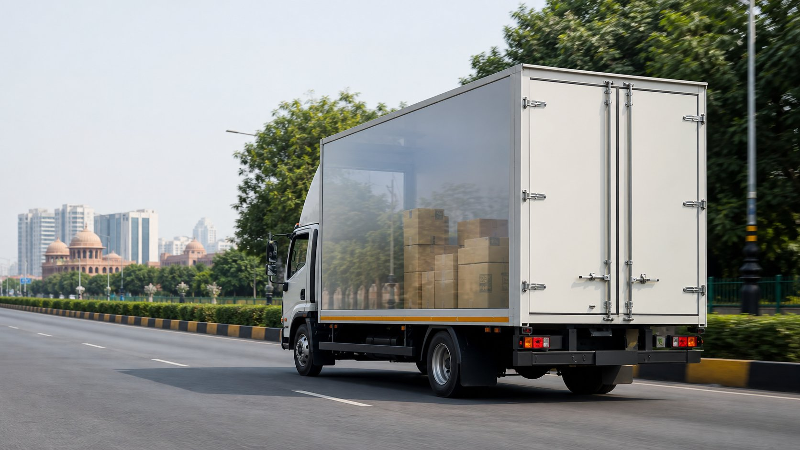

Home Shifting
Household belongings are packed securely and moved to Chennai with planned unloading support.
Professional Ghaziabad to Chennai relocation for homes, offices and goods with long-route packing and transport planning.
Ghaziabad to Chennai relocation connects NCR's residential and industrial zones with a major auto, manufacturing, port and technology destination. Easy India Packers Movers plans the move after checking goods volume, packing sensitivity, pickup access and destination requirements. Our packers and movers Ghaziabad to Chennai service supports family shifting, office moves and selected goods transport with long-route coordination. Customers choosing Ghaziabad to Chennai shifting get guidance on packing strength, vehicle selection and delivery timelines. The service is built for dependable handling across a long north-to-south route.
For route estimate, survey booking and moving guidance, call or WhatsApp 7015066265.
Submit EnquiryHousehold belongings are packed securely and moved to Chennai with planned unloading support.

Office furniture, files, computers and work material are handled with scheduled packing and route planning.

Long-distance packing uses cushioning, cartons, labels and stretch film for safer movement.

Goods are loaded carefully and transported through a planned Ghaziabad to Chennai route.
Call or WhatsApp your Ghaziabad pickup address, Chennai destination, goods list and moving date.
Our team reviews goods volume, packing type, access conditions and vehicle requirement.
Quotation, packing plan, truck option and delivery expectations are confirmed after approval.
Goods are packed, loaded, transported and delivered in Chennai with unloading support.
| House Size | Approximate Charges |
|---|---|
| 1 BHK | ₹23,000 - ₹40,000 |
| 2 BHK | ₹36,000 - ₹72,000 |
| 3 BHK | ₹54,000 - ₹1,04,000 |
*Charges vary based on distance, floor access, goods volume and packing requirement. Call 7015066265 for an accurate quote.

Useful for limited cartons, appliances and selected compact goods.

Preferred for enclosed household and office goods movement over long distance.

Recommended for bigger homes, office loads and dedicated vehicle movement.
Ghaziabad to Chennai shifting usually takes around 5 to 8 days after pickup, depending on route conditions, vehicle movement and destination access.
Charges depend on goods quantity, packing material, truck size, manpower, floor access, distance and optional services such as unpacking or insurance support.
Yes, office goods such as files, computers, furniture and fixtures can be packed and moved from Ghaziabad to Chennai with planned handling.
Yes, enclosed container options can be discussed for household goods, office items and delicate belongings moving over the long route.
Call or WhatsApp 7015066265 with pickup address, Chennai destination, goods list and shifting date to get an estimate.
Talk to Easy India Packers Movers for route planning, packing support and a clear Ghaziabad to Chennai estimate.